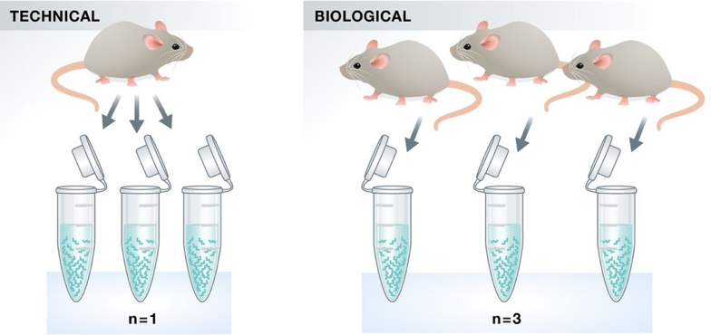
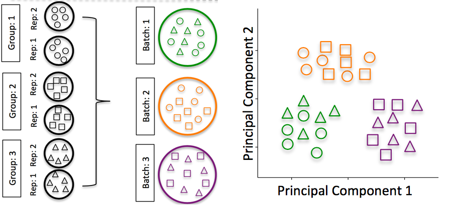
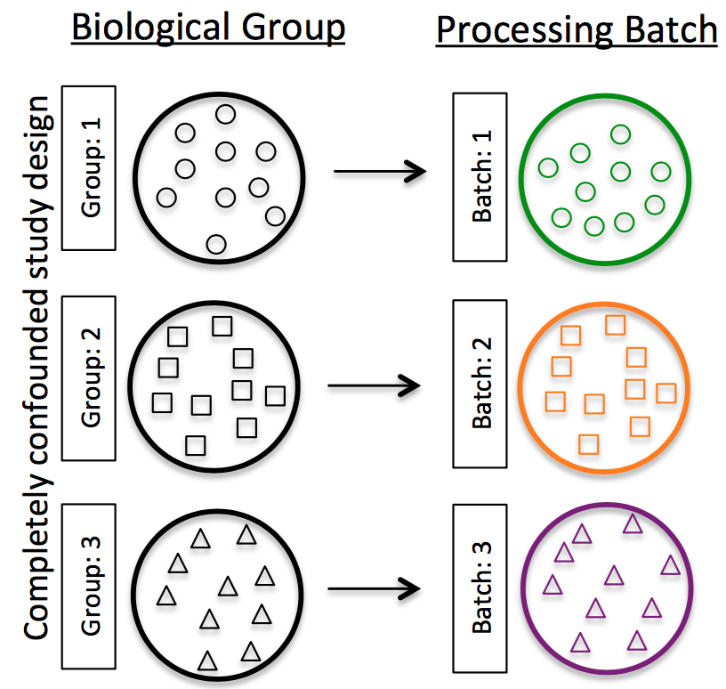
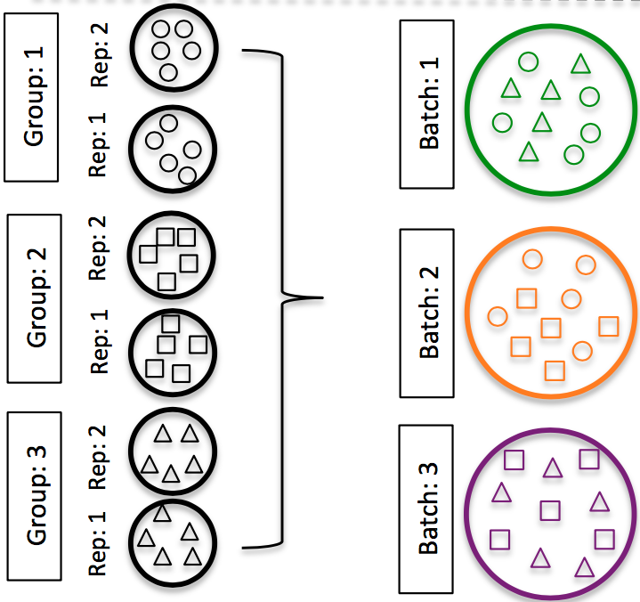
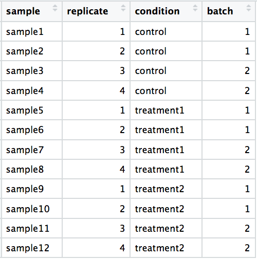

Approximate time: 40 minutes for reading, 40 for assignment
Learning Objectives:
- Describe the importance of replicates for RNA-seq differential expression experiments
- Explain the relationship between the number of biological replicates, sequencing depth and the differentially expressed genes identified
- Demonstrate how to design an RNA-seq experiment that avoids confounding and batch effects
Experimental planning considerations
Understanding the steps in the experimental process of RNA extraction and preparation of RNA-Seq libraries is helpful for designing an RNA-Seq experiment, but there are special considerations that should be highlighted that can greatly affect the quality of a differential expression analysis.
These important considerations include:
- Number and type of replicates
- Avoiding confounding
- Addressing batch effects
We will go over each of these considerations in detail, discussing best practice and optimal design.
Replicates
Experimental replicates can be performed as technical replicates or biological replicates.

Image credit: Klaus B., EMBO J (2015) 34: 2727-2730
-
Technical replicates: use the same biological sample to repeat the technical or experimental steps in order to accurately measure technical variation and remove it during analysis.
-
Biological replicates use different biological samples of the same condition to measure the biological variation between samples.
In the days of microarrays, technical replicates were considered a necessity; however, with the current RNA-Seq technologies, technical variation is much lower than biological variation and technical replicates are unneccessary.
In contrast, biological replicates are absolutely essential for differential expression analysis. For mice or rats, this might be easy to determine what constitutes a different biological sample, but it’s a bit more difficult to determine for cell lines. This article gives some great recommendations for cell line replicates.
For differential expression analysis, the more biological replicates, the better the estimates of biological variation and the more precise our estimates of the mean expression levels. This leads to more accurate modeling of our data and identification of more differentially expressed genes.

Image credit: Liu, Y., et al., Bioinformatics (2014) 30(3): 301–304
As the figure above illustrates, biological replicates are of greater importance than sequencing depth, which is the total number of reads sequenced per sample. The figure shows the relationship between sequencing depth and number of replicates on the number of differentially expressed genes identified [1]. Note that an increase in the number of replicates tends to return more DE genes than increasing the sequencing depth. Therefore, generally more replicates are better than higher sequencing depth, with the caveat that higher depth is required for detection of lowly expressed DE genes and for performing isoform-level differential expression.
Sample pooling: Try to avoid pooling of individuals/experiments, if possible; however, if absolutely necessary, then each pooled set of samples would count as a single replicate. To ensure similar amounts of variation between replicates, you would want to pool the same number of individuals for each pooled set of samples.
For example, if you need at least 3 individuals to get enough material for your
controlreplicate and at least 5 individuals to get enough material for yourtreatmentreplicate, you would pool 5 individuals for thecontroland 5 individuals for thetreatmentconditions. You would also make sure that the individuals that are pooled in both conditions are similar in sex, age, etc.
Replicates are almost always preferred to greater sequencing depth for bulk RNA-Seq. However, guidelines depend on the experiment performed and the desired analysis. Below we list some general guidelines for replicates and sequencing depth to help with experimental planning:
-
General gene-level differential expression:
-
ENCODE guidelines suggest 30 million SE reads per sample (stranded).
-
15 million reads per sample is often sufficient, if there are a good number of replicates (>3).
-
Spend money on more biological replicates, if possible.
-
Generally recommended to have read length >= 50 bp
-
-
Gene-level differential expression with detection of lowly-expressed genes:
-
Similarly benefits from replicates more than sequencing depth.
-
Sequence deeper with at least 30-60 million reads depending on level of expression (start with 30 million with a good number of replicates).
-
Generally recommended to have read length >= 50 bp
-
-
Isoform-level differential expression:
-
Of known isoforms, suggested to have a depth of at least 30 million reads per sample and paired-end reads.
-
Of novel isoforms should have more depth (> 60 million reads per sample).
-
Choose biological replicates over paired/deeper sequencing.
-
Generally recommended to have read length >= 50 bp, but longer is better as the reads will be more likely to cross exon junctions
-
Perform careful QC of RNA quality. Be careful to use high quality preparation methods and restrict analysis to high quality RIN # samples.
-
-
Other types of RNA analyses (intron retention, small RNA-Seq, etc.):
-
Different recommendations depending on the analysis.
-
Almost always more biological replicates are better!
-
NOTE: The factor used to estimate the depth of sequencing for genomes is “coverage” - how many times do the number of nucleotides sequenced “cover” the genome. This metric is not exact for genomes (whole genome sequencing), but it is good enough and is used extensively. However, the metric does not work for transcriptomes because even though you may know what % of the genome has transcriptional activity, the expression of the genes is highly variable.
Confounding
A confounded RNA-Seq experiment is one where you cannot distinguish the separate effects of two different sources of variation in the data.
For example, we know that sex has large effects on gene expression, and if all of our control mice were female and all of the treatment mice were male, then our treatment effect would be confounded by sex. We could not differentiate the effect of treatment from the effect of sex.

To AVOID confounding:
-
Ensure animals in each condition are all the same sex, age, litter, and batch, if possible.
-
If not possible, then ensure to split the animals equally between conditions

Batch effects
Batch effects are a significant issue for RNA-Seq analyses. This is illustrated in the figure below taken from Hicks SC, et al., bioRxiv (2015). On the right-hand side the experimental design is depicted, demonstrating a good use of batches by having samples from both sample groups present in each batch. On the far right hand side, an example PCA is plotted with the samples segregating by batch. The effect of batches on gene expression can often be larger than the effect from the experimental variable of interest, and it is therefore important to design your experiments such that we are able to account for this in our statistical model. We discuss this in more detail below.

Image credit: Hicks SC, et al., bioRxiv (2015)
To explore the issues generated by poor batch study design, they are highlighted nicely in this paper.
How to know whether you have batches?
-
Were all RNA isolations performed on the same day?
-
Were all library preparations performed on the same day?
-
Did the same person perform the RNA isolation/library preparation for all samples?
-
Did you use the same reagents for all samples?
-
Did you perform the RNA isolation/library preparation in the same location?
If any of the answers is ‘No’, then you have batches.
Best practices regarding batches:
-
Design the experiment in a way to avoid batches, if possible.
-
If unable to avoid batches:
-
Do NOT confound your experiment by batch:

Image credit: Hicks SC, et al., bioRxiv (2015)
-
DO split replicates of the different sample groups across batches. The more replicates the better (definitely more than 2).

Image credit: Hicks SC, et al., bioRxiv (2015)
-
DO include batch information in your experimental metadata. During the analysis, we can regress out the variation due to batch if not confounded so it doesn’t affect our results if we have that information.
-

NOTE: The sample preparation of cell line “biological” replicates “should be performed as independently as possible” (as batches), “meaning that cell culture media should be prepared freshly for each experiment, different frozen cell stocks and growth factor batches, etc. should be used [2].” However, preparation across all conditions should be performed at the same time.
Exercise
Your experiment has three different treatment groups, A, B, and C. Due to the lengthy process of tissue extraction, you can only isolate the RNA from two samples at the same time. You plan to have 4 replicates per group. To avoid any confounding or batch effects, you fill out a sample table ahead of time to help you plan your extraction approach:
- Download this Excel version of the table found below. Fill in the
RNA isolationcolumn of the metadata table. Since we can only prepare 2 samples at a time and we have 12 samples total, you will need to isolate RNA in 6 batches. In theRNA isolationcolumn, enter one of the following values for each sample:group1,group2,group3,group4,group5,group6. Make sure to fill in the table so as to avoid confounding by batch ofRNA isolation. - To perform the RNA isolations more quickly, you devote two researchers to perform the RNA isolations. Create a
researchercolumn and fill in the researchers’ initials for the samples they will prepare: use initialsABorCD. Like before, make sure to avoid confounding by batch (i.e researcher) if at all possible!
Feel free to compare notes with other classmates or ask your instructors for help. We can go over this during a future practice session.
| sample | treatment | sex | replicate | RNA isolation |
|---|---|---|---|---|
| sample1 | A | F | 1 | |
| sample2 | A | F | 2 | |
| sample3 | A | M | 3 | |
| sample4 | A | M | 4 | |
| sample5 | B | F | 1 | |
| sample6 | B | F | 2 | |
| sample7 | B | M | 3 | |
| sample8 | B | M | 4 | |
| sample9 | C | F | 1 | |
| sample10 | C | F | 2 | |
| sample11 | C | M | 3 | |
| sample12 | C | M | 4 |
Assignment
In this lesson, you learned a lot about how planning your experimental design can mitigate downstream statistical issues. Even though you have already carried out your RNAseq experiments at this point, filling out a sample table will help you communicate with other researchers (like the BSPC) and make decisions when we get to actual differential expressions step of our pipeline.
This exercise will also give you another chance to practice using scp to copy files and get in the habit of saving tables in text format (.tsv) that is appropriate for downstream analyses.
In a fresh Excel spreadsheet, create a spreadsheet reflecting the RNAseq project you are working on (or perhaps you and/or your PI have already created one with BSPC - find it and take a look and add to it if needed!).
-
Add all the columns (and their values) relevant to your experimental design. Minimally this would include
Sample ID,treatment,replicateand other variables you would like to understand or account for (i.e.sex) . -
Add columns (and their values) for any info you have that will help us watch out for batch effects (e.g. extraction date, person who did made the RNAseq library).
-
Make sure your none of your column names or any cells have spaces between words or any other unusual characters (for example: *, $, \, /) . Underscores are a good, Bash-friendly substitute for spaces.
-
Save the file as a TSV (tab separated values) named
rnaseq_sample_table.tsvon your Desktop. Tab-delimited means that tabs separate different fields (columns) of data. -
Assuming your file is on the Desktop use the following command to send this file to your
rnaseq/metadatadirectory on Biowulf. Note that for sending a file to Biowulf, the local file is listed first ( then the destination (compare this with what we did in Week 2 Lesson 02).$ scp rnaseq_sample_table.tsv username@helix.nih.gov:/data/Bspc-training/$USER/rnaseq/metadata -
In your Biowulf window, navigate to the directory where you sent the file (i.e. /data/Bspc-training/. View your file in
less- does this look like you expected? -
Try extracting just the first column using
cut -f 1 rnaseq_sample_table.tsv. Does that look like you expected? This is just to drive home the point that if you carefully save your tables in a text format like.tsv, you can manipulate them using the CLI which can really come in handy!
When you are done with this, let your instructor know. They will give you feedback on your table and may ask you follow up questions!
This lesson has been developed by members of the teaching team at the Harvard Chan Bioinformatics Core (HBC). These are open access materials distributed under the terms of the Creative Commons Attribution license (CC BY 4.0), which permits unrestricted use, distribution, and reproduction in any medium, provided the original author and source are credited.